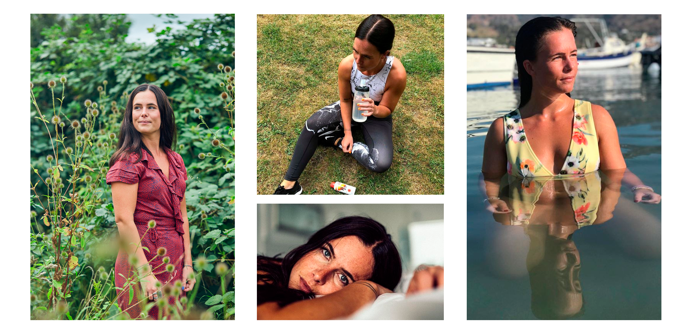
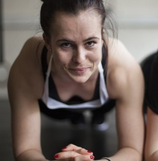

Uge 41: Helse Matilde
 Matilde er kendt på de sociale medier, som en modig og træningsglad blogger. Hun skiller sig ud fra resten af
mængden, med sin ærlighed. Og fortæller råt og usødet omkring hendes tilværelse, der ikke altid har
været en dans på roser. Igennem hashtagget ”#jegerheltnormal” gør hun samtidig oprør mod samfundets ideal omkring det ”perfekte liv”.
I denne uge gæster hun ”Health magasine” hvor hun fortæller om træningsglæde og hvordan det sommetider har redet hende
igennem svære perioder af livet.
Skammer sig ikke
Jeg tager kontakt til Matilde igennem hendes instagram for at høre hende, om jeg må stille hende nogle spørgsmål. Jeg får hurtigt svar, at selvfølgelig må jeg det og at jeg er velkommen til at sende hende en mail.
Hendes mailadresse er fra da hun var barn, og ordene ”sweetytilde” indgår. Hun nænner nemlig ikke at ændre den, da den er fyldt med barndoms naivitet og nostalgi. "Det er sgu hyggeligt" siger hun. Og vi starter interviewet med at joke lidt omkring begge vores mailadresser, der tydeligt stammer fra et andet årti. Det ses allerede her, at Matilde er nede på jorden og #heltnormal, hun skammer sig ikke, om det så gælder mailadresser eller noget helt andet.
Starten
Jeg starter med at spørge indtil hvordan hendes interesse for træning startede, og Matilde fortæller, at hun i sin unge år var meget inaktiv, og overhovedet ikke lavede nogen form for sport. Hun startede først med at træne da hun var omkring 19 år. En af hendes primære motivationsfaktorer var hendes far, der på trods af aldersforskellen på 40 år, var i bedre form end hende - dét kunne hun ikke have på sig.
Derfor var hendes far en stor medspiller, til at få hende i gang med at træne. Hun så at han var glad og sov godt, og samtidig fik gode bekendtskaber igennem træning. – Det tiltrak hende meget.
Da hun startede, satte hun sig et mål, det var at kunne gå op på 3 sal uden at miste pusten.

Mental pause
I takt med at hun startede en mere aktiv livsstil, blev hun mere og mere glad for træning. Det endte faktisk med at blive helt uundværligt, og Matilde fortæller at i svære perioder har det været et kæmpe frirum for hende. ”Det har været min mentale pause og den måde, jeg har fået vrede ud på. Det har været min redning, fordi det var en pause fra sorgen.” - Matilde.
Jeg kunne ikke lade være med at spørge indtil, hvordan det mon ville påvirke hende, hvis hun stoppede med at træne, dertil svarede hun. ”Jeg ville blive meget ked af det og frustreret og det ville bestemt forværre min livskvalitet”.
Matilde fortæller, at hendes tilgang til træning også har ændret sig siden dengang hun var ked af det og nede med sorg. Det er stadig en stor del af hendes tilværelse, men den er ikke længere altoverskyggende, som den har været dengang hun var ked af det. ”Det er en vigtig del af mit liv - og der hvor jeg bruger tid med mine veninder” fortæller hun.
Fra fanatisk til at være i balance?
Hun lærte igennem sorgen, at hun kan bruge sin træning i dårlige perioder som et frirum, hvilket også har været med til at give hende et bedre syn på sundhed generelt. Da Matilde først hoppede på træningsbølgen, var hun meget fanatisk med hvad hun spiste og hvor meget hun skulle træne. Det har heldigvis ændret sig, og nu fokuserer hun i stedet på det der giver hende glæde. Hun er langt mere i balance i dag, og spiser hvad hun har lyst til, samt træner fordi det giver hende overskud og gør hende glad - Ikke fordi det er en straf.
Til slut